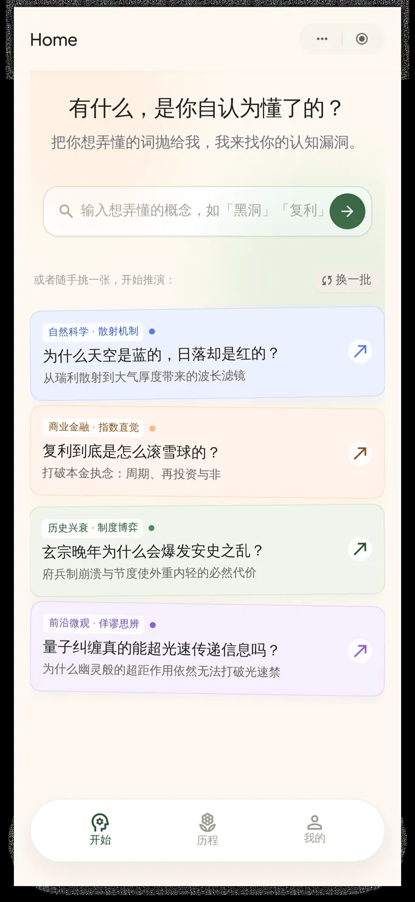
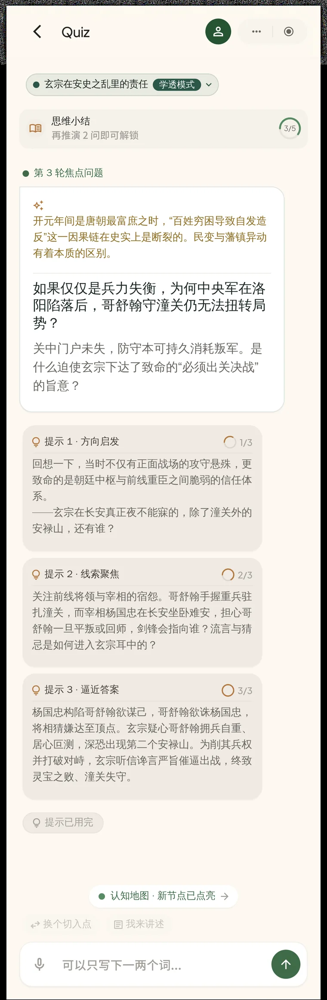
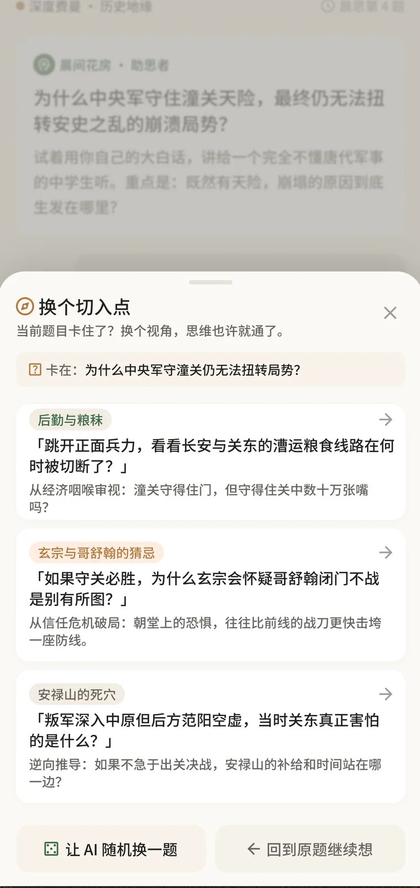
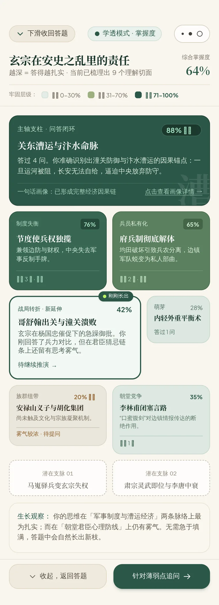

你讲给 AI 听，
AI 追问你
备考时我能读懂、能记住，却没法验证自己是不是真的理解了。问题出在只有输入、没有反馈——所以我把方向反过来。
- 角色
- 产品定义 · 语气规范 · 验收
- 时间
- 2026.05 — 2026.07
- 状态
- 未上线（微信小程序需要注册个体户才能上线此类产品）

问题
能读懂、能记住，但没有内化知识
备考的时候我发现一个很难受的状态：书看完了，笔记也做了，但我说不清自己到底掌握到什么程度。能读懂、能记住，不等于真的理解了，不等于形成知识体系了。
市面上大部分学习工具解决的是「输入」——更好的讲义、更清晰的笔记、更多的题库。但我缺的不是输入，是反馈：一个能告诉我「你刚才那段复述里，哪里其实是含糊的、是有漏洞的」的产品。
费曼学习法的原义恰好就是这个：讲不清楚，就说明没懂。于是我把它做成产品——用户复述，AI 只负责追问和总结。
边界
先写清楚「它不是什么」
AI 学习工具最容易滑向「什么都能干」，然后什么都干不好。所以我先划了三条边界，并且写进 PRD 当作硬约束。
不是聊天机器人
没有AI人格、没有头像、不寒暄。它不是陪你聊天的人，是一个只关心「你到底懂没懂」的对话对象。
不是答案搜索器
随时能看答案，本身就是一条有心理成本的退路——它会让人放弃思考。
不是激励类 App
没有徽章、没有连续天数、没有排行榜、没有庆祝动画。成长的反馈在知识版图界面慢慢增长的板块，在学习总览里客观的总结。


语气
把品牌语气写成五把可执行的尺子
「不庆祝、不审判」是一句调性描述，但它没法交给AI执行——每个人对它的理解都不一样。所以我把它拆成五条具体规则，写进系统提示词。
| 尺子 | 具体规则 |
|---|---|
| 怎么问 | 单点切入，难度随用户的表达热度递进；面对纯小白走「稀薄模式」——先问「这个印象是从哪来的？」 |
| 怎么接 | 接住用户的关键词碎片顺势追问；不替用户把思考做完 |
| 怎么纠错 | 分三档力度：片面 → 继续追问；实质误解 → 抛一个反例，逼用户自己悟到；事实硬错 → 直接指出 |
| 情绪基调 | 正反馈不靠语言，交给知识地图无声地给 |
| 诚实 | 置信度决定语气强度；被用户反驳时既不固执也不秒跪；没有事实核查兜底时，坦诚说明而不是硬答 |
PRD 里还单独列了一张禁用词表：「太棒了」「你说得很好」「非常正确」——这类话会让用户误判自己的掌握程度，是产品要防的东西，不是要加的东西。
地图
把「学没学懂」变成能看见的形状
理解程度是看不见的，这是这个产品最难的部分。我的做法是：把用户聊过的知识板块按层级摆成一张版图，色块越深，表示这一块掌握得越牢——哪块是虚的，一眼就能看出来。
这套设计的用意是：比起被表扬，用户更需要看见自己思考的形状在长大。

停在哪
功能做完了，但我知道它还不够好
这个项目最终没有上线。目前功能基本完成，界面、对话引擎和知识地图都已经跑通。
停下来的原因是：我列出了它当时的问题，然后判断这些问题是产品的核心体验问题，不是可以带着上线的瑕疵。
目前存在的问题
没有搭建好登录系统、云端系统，用户一旦清除本地缓存，所有知识板块、学习总览进度都清空。
我选择先继续打磨核心体验，而不是把这些包一包就发出去。一个针对知识巩固内化的学习工具，必须能够长期稳定使用——记录自己的成长，建立长期知识体系。
这也是 Gloss 和费曼这两个项目的分水岭：Gloss 的核心闭环（点句 → 白话）成立，所以我让它上线；费曼的核心闭环（问答 → 地图反馈 → 形成总结 →长期跟进）不成立，所以我把它停在原地。
现状
现在的状态
费曼学习助手目前处于搁置状态，精力集中在 Gloss 上。它是我用 AI 编程助手完整跑通「需求定义 → 开发 → 自测 → 反馈优化」闭环的第一个项目——Gloss 上很多做法（把主观标准写成硬规则、先划边界再谈功能）都是在这个项目里试出来的。